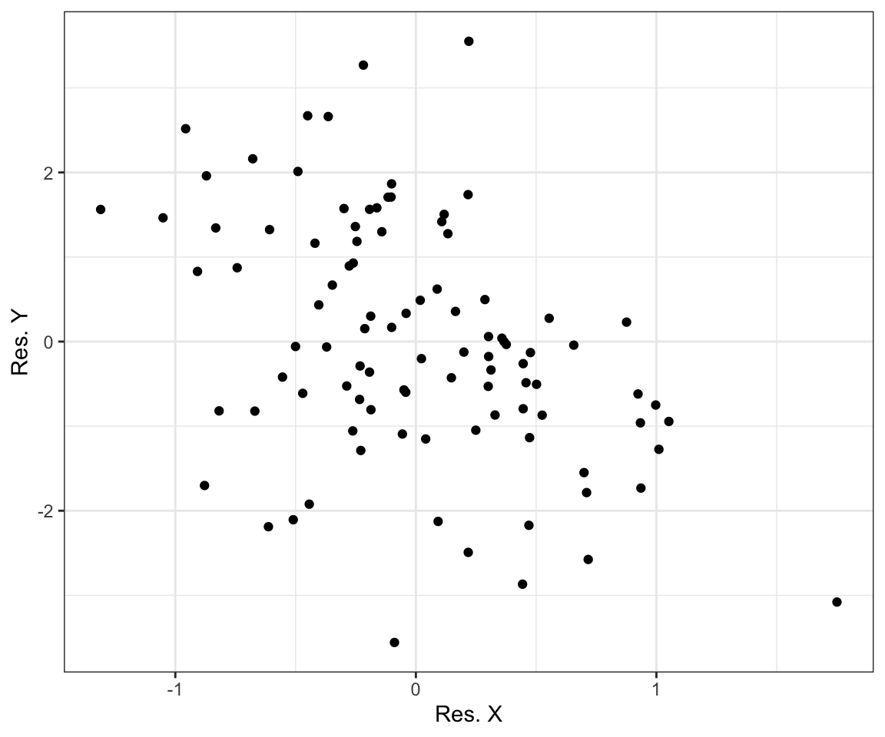

Chapter 7 Linear Regression Essentials with R
7.1 Libraries
library(haven) # reading stata data
library(dplyr) # data manipulation
library(tibble) # nicer dataframes
library(stargazer) # tables
library(ggplot2) # graphs7.2 Loading the data
mrw_df = read_dta('data/mrw.dta')
head(mrw_df)## # A tibble: 6 × 11
## number country n i o rgdpw60 rgdpw85 gdpgrowth popgrowth i_y
## <dbl> <chr> <dbl> <dbl> <dbl> <dbl> <dbl> <dbl> <dbl> <dbl>
## 1 1 Algeria 1 1 0 2485 4371 4.80 2.60 24.1
## 2 2 Angola 1 0 0 1588 1171 0.800 2.10 5.80
## 3 3 Benin 1 0 0 1116 1071 2.20 2.40 10.8
## 4 4 Botswana 1 1 0 959 3671 8.60 3.20 28.3
## 5 5 Burkina Fa… 1 0 0 529 857 2.90 0.900 12.7
## 6 6 Burundi 1 0 0 755 663 1.20 1.70 5.10
## # … with 1 more variable: school <dbl>We can cutify the output a little by using the kable function.
knitr::kable(head(mrw_df))| number | country | n | i | o | rgdpw60 | rgdpw85 | gdpgrowth | popgrowth | i_y | school |
|---|---|---|---|---|---|---|---|---|---|---|
| 1 | Algeria | 1 | 1 | 0 | 2485 | 4371 | 4.8 | 2.6 | 24.1 | 4.5 |
| 2 | Angola | 1 | 0 | 0 | 1588 | 1171 | 0.8 | 2.1 | 5.8 | 1.8 |
| 3 | Benin | 1 | 0 | 0 | 1116 | 1071 | 2.2 | 2.4 | 10.8 | 1.8 |
| 4 | Botswana | 1 | 1 | 0 | 959 | 3671 | 8.6 | 3.2 | 28.3 | 2.9 |
| 5 | Burkina Faso | 1 | 0 | 0 | 529 | 857 | 2.9 | 0.9 | 12.7 | 0.4 |
| 6 | Burundi | 1 | 0 | 0 | 755 | 663 | 1.2 | 1.7 | 5.1 | 0.4 |
As you can see, we have 11 variables and 121 observations.
We have the following variables:
- number: a country identifier between 1 and 121 country country name (a string variable)
- country: the name of the country
- n: a dummy variable equal to one if the country is included in the non-oil sample
- i: a dummy variable equal to one if the country is included in the intermediate sample
- o: a dummy variable equal to one if the country is included in the oecd sample
- rgdpw60: real GDP per working age population in 1960
- rgdpw85: real GDP per working age population in 1985
- gdpgrowth: average annual growth rate of real GDP per working age population between 1960 and 1985
- popgrowth: average annual growth rate of the working age population between 1960 and 1985
- i_y: real investment as a share of real GDP, averaged over the period 1960-85
- school: % of working age population in secondary school
7.3 Meaningful names
The first thing we should do is probably to give these variables more meaningful names in order to escape the 90s charme conveyed by them.
mrw_df = mrw_df %>%
rename(non_oil = n,
oecd = o,
intermediate = i,
gdp_60 = rgdpw60,
gdp_85 = rgdpw85,
gdp_growth_60_85 = gdpgrowth,
pop_growth_60_85 = popgrowth,
inv_gdp = i_y,
school = school)7.4 Create variables for estimation
In order to follow the estimation, we will need to create some additional variables:
- The logs of the GDP per working age pop. in 1985 and 1960.
- The investment to GDP ratio has to be converted to lie between 0 and 1. Also we need the log of it.
- We have to create the
ndgvariable which is assumed to be population growth (0 - 1) + 0.05. Again, we need the log of it. - We want to use the log of the schooling rate (again first divided by 100).
- Finally, and just for consistency, we should convert our sample dummies to factors.
# log gdp
mrw_df = mrw_df %>%
mutate(ln_gdp_85 = log(gdp_85),
ln_gdp_60 = log(gdp_60),
ln_inv_gdp = log(inv_gdp/100),
non_oil = factor(non_oil),
intermediate = factor(intermediate),
oecd = factor(oecd),
ln_ndg = log(pop_growth_60_85/100 + 0.05),
ln_school = log(school/100)) %>%
select(country, ln_gdp_85, ln_gdp_60, ln_inv_gdp,
non_oil, intermediate, oecd,
ln_ndg, ln_school, gdp_growth_60_85)
head(mrw_df)## # A tibble: 6 × 10
## country ln_gdp_85 ln_gdp_60 ln_inv_gdp non_oil intermediate oecd ln_ndg
## <chr> <dbl> <dbl> <dbl> <fct> <fct> <fct> <dbl>
## 1 Algeria 8.38 7.82 -1.42 1 1 0 -2.58
## 2 Angola 7.07 7.37 -2.85 1 0 0 -2.65
## 3 Benin 6.98 7.02 -2.23 1 0 0 -2.60
## 4 Botswana 8.21 6.87 -1.26 1 1 0 -2.50
## 5 Burkina Faso 6.75 6.27 -2.06 1 0 0 -2.83
## 6 Burundi 6.50 6.63 -2.98 1 0 0 -2.70
## # … with 2 more variables: ln_school <dbl>, gdp_growth_60_85 <dbl>7.5 Summary statistics
Maybe, we would like to have summary statistics for our dataframe. For that, we need summary.
summary(mrw_df)## country ln_gdp_85 ln_gdp_60 ln_inv_gdp non_oil
## Length:121 Min. : 6.021 Min. : 5.948 Min. :-3.194 0:23
## Class :character 1st Qu.: 7.098 1st Qu.: 6.881 1st Qu.:-2.120 1:98
## Mode :character Median : 8.155 Median : 7.582 Median :-1.732
## Mean : 8.106 Mean : 7.654 Mean :-1.815
## 3rd Qu.: 8.949 3rd Qu.: 8.360 3rd Qu.:-1.423
## Max. :10.152 Max. :11.263 Max. :-0.997
## NA's :13 NA's :5
## intermediate oecd ln_ndg ln_school gdp_growth_60_85
## 0:46 0:99 Min. :-2.937 Min. :-5.521 Min. :-0.900
## 1:75 1:22 1st Qu.:-2.703 1st Qu.:-3.730 1st Qu.: 2.800
## Median :-2.604 Median :-3.006 Median : 3.900
## Mean :-2.629 Mean :-3.204 Mean : 4.094
## 3rd Qu.:-2.538 3rd Qu.:-2.504 3rd Qu.: 5.300
## Max. :-2.137 Max. :-2.112 Max. : 9.200
## NA's :14 NA's :3 NA's :47.6 Create three samples
mrw_oecd = mrw_df %>% filter(oecd == 1)
mrw_int = mrw_df %>% filter(intermediate == 1)
mrw_non_oil = mrw_df %>% filter(non_oil == 1)7.7 Run the estimation for Table 1 in MRW (1992)
To run a linear model we need the lm command.
m_non_oil = lm(ln_gdp_85 ~ 1 + ln_inv_gdp + ln_ndg, data = mrw_non_oil)
m_int = lm(ln_gdp_85 ~ 1 + ln_inv_gdp + ln_ndg, data = mrw_int)
m_oecd = lm(ln_gdp_85 ~ 1 + ln_inv_gdp + ln_ndg, data = mrw_oecd)To get nicely formatted results, we can use the summary command:
summary(m_non_oil)##
## Call:
## lm(formula = ln_gdp_85 ~ 1 + ln_inv_gdp + ln_ndg, data = mrw_non_oil)
##
## Residuals:
## Min 1Q Median 3Q Max
## -1.79144 -0.39367 0.04124 0.43368 1.58046
##
## Coefficients:
## Estimate Std. Error t value Pr(>|t|)
## (Intercept) 5.4299 1.5839 3.428 0.000900 ***
## ln_inv_gdp 1.4240 0.1431 9.951 < 2e-16 ***
## ln_ndg -1.9898 0.5634 -3.532 0.000639 ***
## ---
## Signif. codes: 0 '***' 0.001 '**' 0.01 '*' 0.05 '.' 0.1 ' ' 1
##
## Residual standard error: 0.6891 on 95 degrees of freedom
## Multiple R-squared: 0.6009, Adjusted R-squared: 0.5925
## F-statistic: 71.51 on 2 and 95 DF, p-value: < 2.2e-167.8 Show the results in a table
stargazer(m_non_oil, m_int, m_oecd, type = "latex")stargazer(m_non_oil, m_int, m_oecd, type = "latex",
column.labels = c("Non-Oil",
"Intermediate",
"OECD"),
covariate.labels = c("$\\log(\\frac{I}{GDP})$",
"$\\log(n+\\delta+g)$",
"Constant"),
dep.var.labels = "Log(GDP) 1985",
omit.stat = c("f",
"rsq",
"ser"),
title = "Replication of (part of) Table 1 in Mankiw, Romer, and Weil (1992)",
style = "qje")7.9 Robust standard errors
In economics, we often would like to have robust standard errors. To look at how we see them. Let’s go back to an example.
lm_example = lm(ln_gdp_85 ~ 1 + ln_inv_gdp + ln_ndg, data = mrw_non_oil)library(sandwich) # for robust standard errors
library(lmtest) # to nicely summarize the results## Loading required package: zoo##
## Attaching package: 'zoo'## The following objects are masked from 'package:base':
##
## as.Date, as.Date.numericlm_robust = coeftest(lm_example, vcov = vcovHC(lm_example, "HC1"))
print(lm_robust)##
## t test of coefficients:
##
## Estimate Std. Error t value Pr(>|t|)
## (Intercept) 5.42988 1.58558 3.4246 0.0009108 ***
## ln_inv_gdp 1.42401 0.13196 10.7911 < 2.2e-16 ***
## ln_ndg -1.98977 0.54524 -3.6493 0.0004297 ***
## ---
## Signif. codes: 0 '***' 0.001 '**' 0.01 '*' 0.05 '.' 0.1 ' ' 1Since we do not want to type this every time. We should write a short function that takes a linear model and returns the robust summary of it.
# needs sandwich and lmtest
print_robust = function(lm_model) {
results_robust = coeftest(lm_model, vcov = vcovHC(lm_model, "HC1"))
print(results_robust)
}
print_robust(lm_example)##
## t test of coefficients:
##
## Estimate Std. Error t value Pr(>|t|)
## (Intercept) 5.42988 1.58558 3.4246 0.0009108 ***
## ln_inv_gdp 1.42401 0.13196 10.7911 < 2.2e-16 ***
## ln_ndg -1.98977 0.54524 -3.6493 0.0004297 ***
## ---
## Signif. codes: 0 '***' 0.001 '**' 0.01 '*' 0.05 '.' 0.1 ' ' 1Now, unfortunately the coeftest function does not return an object that is easily transferred to a stargazer table. Thus, we will have to write another function.
# needs sandwich
compute_rob_se = function(lm_model) {
vcov = vcovHC(lm_example, "HC1")
se = sqrt(diag(vcov))
}This makes our life somewhat easier. No, in order to compare the standard errors we could do the following.
# run the model
lm_example = lm(ln_gdp_85 ~ 1 + ln_inv_gdp + ln_ndg, data = mrw_non_oil)
# obtain the robust ses
rob_se = compute_rob_se(lm_example)
stargazer(lm_example, lm_example,
se = list(NULL, rob_se))7.10 Some Graphs
ggplot(mrw_non_oil) +
geom_point(aes(x = ln_gdp_60, y = gdp_growth_60_85)) +
labs(x = "Log output per working-age adult in 1960",
y = "Growth rate: 1960-85",
title = "Unconditional Convergence") +
theme_bw()Let’s try to get the residuals.
lm_y = lm(gdp_growth_60_85 ~ 1+ ln_inv_gdp + ln_ndg + ln_school, data = mrw_non_oil)
lm_x = lm(ln_gdp_60 ~ 1+ ln_inv_gdp + ln_ndg + ln_school, data = mrw_non_oil)
y_res = lm_y$residuals
x_res = lm_x$residuals
graph_tibble = tibble(
y = y_res,
x = x_res)
ggplot(graph_tibble) +
geom_point(aes(x, y)) +
labs(x = "Res. X",
y = "Res. Y") +
theme_bw()